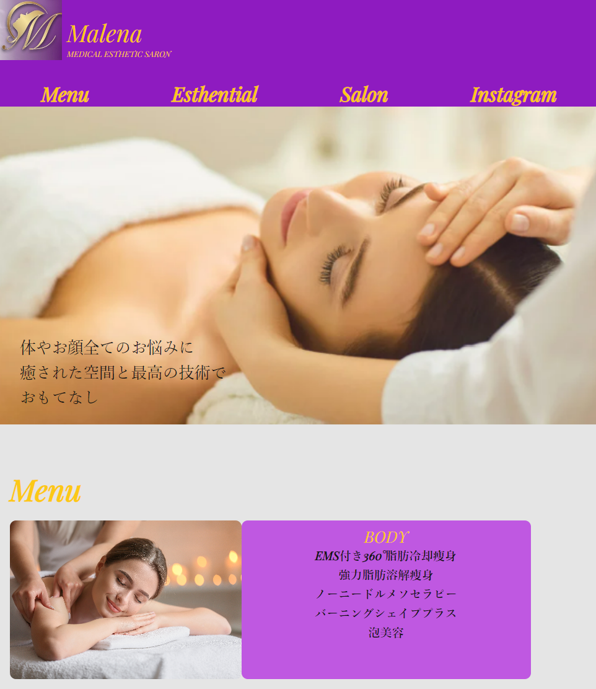

ホームページ制作

エステサロン公式サイト制作
目的
通っているエステサロンの魅力を、Webでもしっかり伝える
制作の背景
通っているエステサロンの公式ホームページを、オーナー様のご依頼で制作
実際にお店に通う中で感じた「安心感」や「丁寧な接客」の雰囲気を、Web上でも伝えられるよう意識
こだわったポイント
・お店のイメージカラーや雰囲気を意識した、やさしく落ち着いたデザイン
・施術内容、料金、予約方法など「来店前に知りたい情報」を分かりやすく配置
・スマホでも見やすいようにレスポンシブ対応
・オーナー様との対話を重ねながら、「らしさ」を大切にした構成を意識